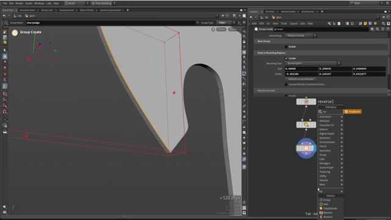
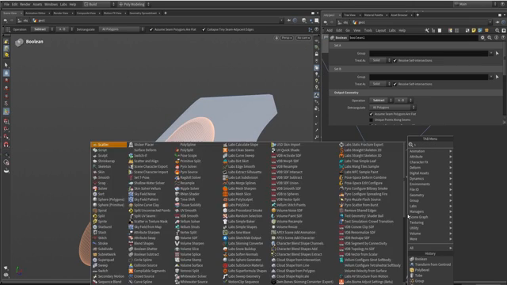

Houdini で斧を作る 2 — 刃のメインシェイプを立ち上げる
出典: Axe modeling || Houdini tutorial （Simon Houdini さん / 1:07:59 / 英語）の 11:35〜24:55 部分。 このページは、上記の動画を見ながら自分用にまとめた日本語の学習メモです。作者公式の翻訳ではありません。 前回は参照画像とカーブで輪郭を取るでした。
この記事で扱うこと
チャプターでいうと Define main shape にあたる、13分ほどの長い一節です。
前回作った輪郭から、斧の刃の本体を立ち上げます。
1. 刃の鋭いエッジを作る — 選択を壊さない工夫

刃の鋭い部分を作るには、そのエッジにベベルをかけます。
手でエッジを選んで（Shift で追加選択、Shift+A でループ選択）
ベベルすることもできますが、ここに落とし穴があります。
あとからカーブを変更すると、手で作った選択は壊れます。 カーブは何度でも戻って直せるのが利点なので、 選択のほうもプロシージャルにしておくべきです。
Group Create で範囲指定する
Group Createを置き、Group Name をsharp_edgeにします- Group Type を
Edgesにします Keep in Bounding Regionsを有効にし、 Bounding Type をBounding Boxにします- ワールドにボックスが出るので、刃の縁だけを囲むように小さくして位置を合わせます
これで「この空間に入っているエッジ」という指定になるので、
カーブを変えても選択が追従します。
Space+3 でエッジモードに切り替えると作業しやすくなります。
ベベルをかける
できた sharp_edge グループを指定してベベルします。
全体にかけるのではなく、グループだけに効かせられます。
ここで重要なのは、ベベルをかける面が可能なかぎり平らであることです。 途中に点があると、ベベルは最初に行き当たった点で止まってしまいます。
丸くなってしまっては困るので、鋭いエッジが出るように調整します。 これで刃の基本形ができました。
2. 厚みを付けて閉じた形にする
PolyExtrude で厚みを付けます。ここで一点、見落としやすい設定がありました。
そのままだと裏側が開いた状態になります。
PolyExtrude の中で背面を出力するオプションを有効にすると、
閉じた3D形状になります。
3. くぼみを彫る — Tube を引き算する

参照写真を見ると、刃の面にくぼみがあります。これを引き算で作ります。
Tubeをワールドに置き、参照に合わせて回転・スケールします （Wでワイヤーフレーム表示にすると合わせやすくなります）- 列数を増やします。動画では思い切って 60 にしていました
Bevelをかけます。このときignore flattened partsを使い、 値を上げて形を整えます
ジオメトリを増やすことを恐れる必要はありません。 この段階では気前よく足してしまってよい、という方針でした。
Transform from Centroid が便利
位置を調整するときに Transform from Centroid が使われていました。
このノードは重心（centroid）を自動的に取ってくれるので便利です。
もしこのノードが手元に無ければ、
通常の Transform の pivot 欄に centroid の関数を直接書けば同じことができます。
あとは R や E キーでモードを切り替えながら、
回転や潰し具合を調整して参照に近づけます。
最初はベベルが引き伸ばされたようになるので、チューブ自体を潰して形を整えていました。
Boolean で引く
形が決まったら Boolean の Subtract で刃から引きます。
上の画像のパラメータパネルがその設定です。
Boolean のパネルには Detriangulate（All Polygons）や
Assume Seam Polygons Are Flat といった項目もあり、
継ぎ目の処理を細かく制御できるようになっています。
4. 左右対称にしてプレビューする
刃の両面を作るために Symmetry を足し、反対側にも同じくぼみを作ります。
ハイポリのプレビュー
仕上がりを確認するには、ボクセル（VDB）でハイポリ化して見るのが早いとのことでした。
- ボクセルサイズを
0.01程度にして変換します - スムージングを何回か回すと、刃がなめらかになります
- プレビュー段階では100万ポリゴンくらいを狙うと処理が速く、様子も十分わかります
最終的な解像度は後の工程で上げるので、ここでは軽く保っておきます。
5. 穴を開ける — Duplicate で並べる
参照を見ると、刃に穴がいくつも開いています。これも引き算で作ります。
- 小さい
Tubeを作り、中心を合わせてサイズを詰めます Duplicateノードで複製します- pivot に centroid の X / Y / Z をコピーして入れます （Z は既にその位置なので不要な場合もあります）
- 複製する個数を指定します
Duplicateをもう1つ重ねると、縦横に展開できます
動画では6個の穴を作るつもりが9個並んでしまい、数を2に戻して調整していました。 数を1つ変えるだけで並びが変わるのがプロシージャルの利点です。
できた穴たちを Merge でまとめて、まとめて Boolean で引きます。
大きい穴も同じ手順で、チューブをコピーして中心に置き、半径を調整して作ります。
これらの穴の形は、後で必ず再利用します。 刃の他のパーツも貫通するので、同じ形で引き算する必要があるためです。
この記事のまとめ
- 手でエッジを選ぶとカーブを直したときに選択が壊れます
Group CreateのKeep in Bounding Regions（Bounding Box）で範囲指定すれば追従します- ベベルは平らな面でないと、最初の点で止まります
PolyExtrudeは背面の出力を有効にしないと開いた形状のままです- くぼみは
Tubeを作ってBooleanのSubtractで引きます Transform from Centroidは重心を自動で取ってくれます。無ければ pivot にcentroid関数を書きます- プレビューは VDB で100万ポリゴン程度を狙うと軽くて十分見えます
- 穴は
Duplicateを重ねて縦横に展開できます。この形は後で再利用します
次は中央の金属プレートを作り、本体から引き算していきます。